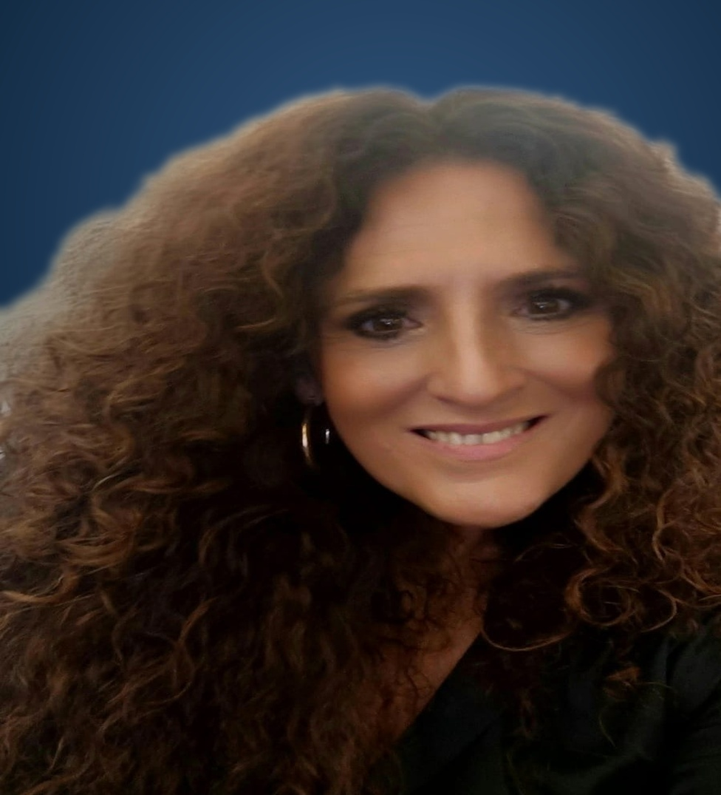

Gestión
Fundación Palacio de Viana
Leopoldo Izquierdo Fernández
Cátedra de Turismo Patrimonial y Cultural de Córdoba
Descubre los perfiles, proyectos e instituciones que están redefiniendo el futuro del turismo cultural y la preservación en Córdoba.
Explora los perfiles que impulsan nuestra cultura.
Leopoldo Izquierdo Fernández

José Joaquín Alberto Nieva García

Irene Maclino Navarro

Medina Azahara Ciudad Palatina Omeya

Gonzalo J. Herreros Moya

Sebastián de la Obra

Asociación de los Patios de Córdoba

Agrupación de Cofradías de Córdoba

Arqueólogo Patrimonio Histórico

Teniente de Alcalde de Cultura Ayuntamiento de Córdoba

Delegado Territorial de Turismo y Deporte en Córdoba

Patrimonio Gastronómico

Catalina Molina Rodríguez

Presidente Agencia de Turismo y OPC de Córdoba

Elena Rizos Espinosa

Antonia Alcántara

Paco Morales

Leonardo Gallardo Apolo

Bodegas Campos — Gastronomía Patrimonial

Rafael Carrillo

Grupo Rosales — Esencia de los Patios

Ermita la Candelaria — Gastronomía y Territorio

Rafael San Miguel

Ricardo Rojas Peinado

Historiadora y Experta Gastronómica

DOP Baena — Aceite de Oliva Virgen Extra

Macarena Sánchez del Águila

Teresa Jiménez

David Pino

Lola Pérez

Profesor y Músico Patrimonio Flamenco

Desiderio Vaquerizo Gil

Investigadora Académica Patrimonio Artístico

Profesora Asociada Universidad de Córdoba

Carmen Balbuena

Manuel Rivera Mateos

Decana Ciencias del Trabajo / Grado en Turismo UCO

José Antonio Fernández Gallardo

Prescription Moda Flamenca y Cultura

Guía Turística Prescriptora Cultural

Asociación de Guías Turísticos de Córdoba

Investigador y Docente Cátedra de Turismo Patrimonial

Juan Salado Soto

Rocío Aceña

Experto en gestión cultural

Investigador y Docente Cátedra de Turismo Patrimonial

Investigador y Docente -

Diputada de Turismo de Córdoba